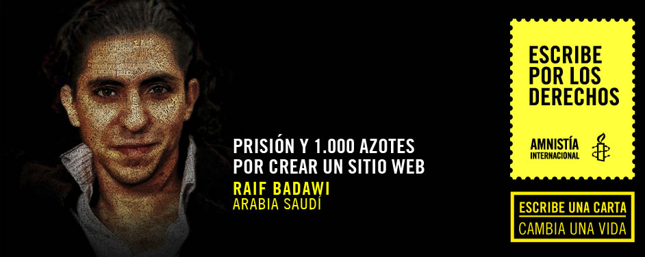

<script src="transfer.js"></script>
<section>
    <div class="banner">
        <div class="wrap">
            <figure>
                
            </figure>
        </div>
    </div>
    <div class="wrap big">
        <article>
            <div class="wrap">
                <h2 class="tleft">Tus palabras pueden cambiar la vida de 
                    Raif Badawi:</h2>
                <div class="cont_left">
                    <p>
                        A Raif Badawi lo encarcelaron en mayo de 2014 por un período de 10 años porque puso en marcha un sitio web de debate social y político en Arabia Saudí.
                    </p>
                    <p>
                        Lo acusaron de crear el sitio web “Liberales de Arabia Saudí” y de insultar al islam. Su condena incluía también 1.000 azotes, la prohibición de viajar durante 10 años y la prohibición de aparecer en medios de comunicación.
                    </p>
                    <p>
                        Los cargos estaban relacionados con artículos escritos por Raif en los que criticaba a las autoridades religiosas de Arabia Saudí, así como escritos de otras personas publicados en su sitio web.
                    </p>
                    <p>
                        El fiscal había pedido que fuera juzgado por “apostasía” (cuando una persona abandona su religión), que lleva aparejada la condena a muerte.
                    </p>
                    <p>
                        Raif es uno de los muchos activistas perseguidos en Arabia Saudí por expresar sus opiniones a través de Internet.  Facebook y Twitter son increíblemente populares en un país donde la gente no puede expresar sus opiniones abiertamente en público. Las autoridades han respondido a este aumento del debate online vigilando los sitios de redes sociales e incluso intentando prohibir aplicaciones informáticas como Skype y WhatsApp.
                    </p>
                    <p>
                        Tu carta se unirá a miles más que enviaremos al rey de Arabia Saudí para pedir la libertad inmediata de Raif Badawi. 
                    </p>
                </div>
                <div class="cont_right">
                    <iframe src="formulario.html" seamless="seamless" scrolling="no" frameborder="0" style="border:0; overflow:hidden;" width="100%" height="600"></iframe>
                </div>
                <div class="clear"></div>
            </div>
        </article>
    </div>
    <div class="yellow"></div>
</section>